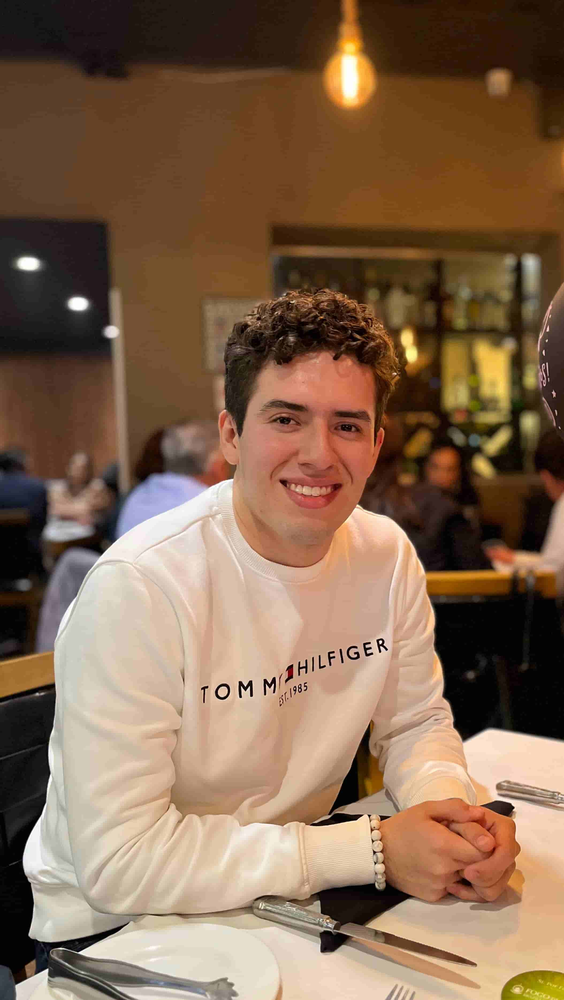

Daniel Enrique Osorio Flores | WDD 130

Hello! My name is Daniel Enrique Osorio Flores. I am from Calimaya, Mexico State. My birthday is the 31st of August, so right now I am 23 years old. On the 27 of july i got sealed in the Mexico City Mexico Temple with the Love of my life, Kenny. I served a mission for the Church of Jesus Christ of Latter Day Saints in the Mexico City East Mission from January 2020 to January 2022. I have been doing Cross-Trainning (Crossfit) for almost two years, this is one of the things i enjoy most to do. I have been in one competition of Crossfit this year in Morelia, Michoacan in Mexico. It was my first one and i loved to participated in it as an individual in the beginners category.For now I am resting from Crossfit due to a injury i have in my hip and pelvis, but i hope that in a year i can go back to Crossfit. This year i started college at BYU Patwhay in BYU-Idaho online program. The major i chosed was the Bachelor´s Degree in Software Development. and since the beginning i liked a lot the major. I can say is hard, it requires a lot of time, practice and read a lot of information. But the small things i have learned in the last couple months have been worth the sacrifice. One of the things that my wife and i like to do is to go to music festivals, concerts, and music presentation. The most recent one that we went was the concert of Metallica 72 seasons WorldWide Tour. We went to the concert in mexico city on the 20th of september of 2024, i have been in some metal concerts, and all that i can say is that Mettalica knows how to give a true show, in my opinion it has been one of the best metal concerts i have attented.